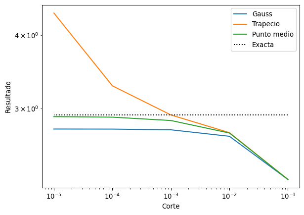
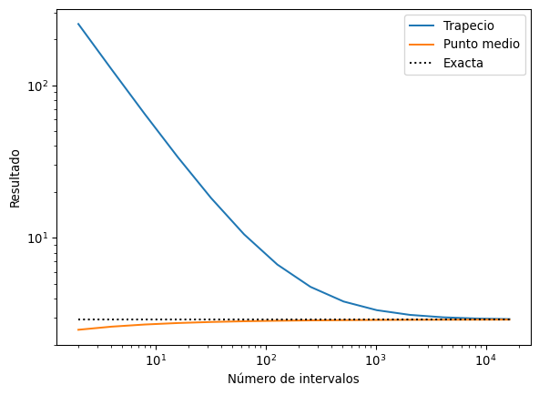

import numpy as np
import matplotlib.pyplot as plt
from scipy.special import factorialCuadratura de Gauss, integrales múltiples e impropias
Cuadratura gaussiana
Este método consiste en hacer la misma integral usando polinomios, pero ahora escogemos las evaluaciones tratando de minimizar el error. Para hacerlo escribimos
\[ \int_{-1}^1 dx\,f(x) \approx \sum_{i=1}^n c_i f(x_i) \]
Se escogen los puntos \(x_i\) y los coeficientes \(c_i\) tal que esta fórmula sea exacta cuando \(f\) es un polinomio de grado \(2n - 1\).
Ejemplo: Cuando \(n = 2\) podemos hacer que la integral sea exacta para todos los polinomios de orden \(3\), es decir
\[ \int_{-1}^{1} dx\, f(x) = c_1 f(x_1) + c_2 f(x_2). \]
Necesitamos escoger los números \(x_1, x_2\) y \(c_1, c_2\) tal que esto se cumpla. Pero podemos enfocarnos en que sea verdad para polinomios del tipo \(x^n\) ya que
\[ \int_{-1}^1 dx\, f(x) = a_3 \int_{-1}^1 dx\,x^3 + a_2 \int_{-1}^1 dx\,x^2 + a_1 \int_{-1}^1 dx\,x + a_o \int_{-1}^1 dx \]
Empezamos por \(f(x) = 1\):
\[ c_1 + c_2 = \int_{-1}^1 dx\,1 = 2 \]
Ahora con \(f(x) = x\):
\[ c_1x_1 + c_2 x_2 = \int_{-1}^1 dx\,x = 0 \]
Ahora con \(f(x) = x^2\):
\[ c_1 x_1^2 + c_2 x_2^2 = \int_{-1}^1 dx\,x^2 = \frac{2}{3} \]
Finalmente con \(f(x) = x^3\):
\[ c_1 x_1^3 + c_2 x_2^3 = \int_{-1}^1 dx\,x^3 = 0 \]
Son cuatro ecuaciones para cuatro números cuya solución es
\[ c_1 = 1\,,\,\,c_2 = 1\,,\,\,x_1 = -\frac{\sqrt{3}}{3}\,,\,\,x_2 = \frac{\sqrt{3}}{3} \]
Hay un método más sistemático que involucra polinomios ortogonales. Recordemos que los polinomios de Legendre satisfacen:
\[ \int_{-1}^1 dx\,P_n(x) P_m(x) \propto \delta_{nm} \]
Además toda función en el intervalo \((-1, 1)\) se puede escribir como combinación lineal de polinomios de Legendre
\[ f(x) = \sum_{n = 0}^\infty c_n P_n(x) \]
En particular, un polinomio de orden \(m\) se puede escribir como
\[ P(x) = \sum_{n=0}^m c_n P_n(x) \]
tal que, si \(m < n\), tenemos
\[ \int_{-1}^1 dx\,P_n(x) P(x) = 0 \]
Resulta que los ceros del polinomio de Legendre de orden \(n\) (o en general polinomios ortogonales) nos dan los coeficientes para la cuadratura de Gauss de orden \(n\).
Para verlo, supongamos que integramos un polinomio de orden \(<n\), entonces podemos descomponerlo en polinomios de Lagrange alrededor de los ceros del polinomio de Legendre \(x_i\)
\[ P(x) = \sum_{i=1}^n P(x_i) L_i(x) = \sum_{i=1}^n \prod_{j = 1,j\neq i}^n \frac{x - x_j}{x_i-x_j} P(x_i) \]
La igualdad es exacta para polinomios de grado \(<n\) (el término de error es proporcional a \(f^{(n)}\) que es cero para estos polinominos) y cualquier conjunto de puntos \(x_i\). Al integrar obtenemos
\[ \int_{-1}^1 dx\,P(x) = \sum_{i=1}^n P(x_i) \int_{-1}^1dx\,\prod_{j = 1,j\neq i}^n \frac{x - x_j}{x_i-x_j} \]
Entonces se cumple la igualdad con
\[ c_i = \int_{-1}^1dx\,\prod_{j = 1,j\neq i}^n \frac{x - x_j}{x_i-x_j} \]
Ahora para polinomios de grado \(\geq n\) pero \(< 2n\) tenemos que podemos siempre escribirlos de la forma
\[ P(x) = Q(x) P_n(x) + R(x) \]
donde \(Q(x)\) es el polinomio cociente, de orden \(<n\), y \(R(x)\) es el polinomio residuo de orden \(<n\). Por la propiedad de los polinomios de Legendre
\[ \int_{-1}^1dx\,P(x) = \int_{-1}^1dx\,Q(x) P_n(x) + \int_{-1}^1dx\,R(x) = \int_{-1}^1dx\,R(x) \]
Como el orden de \(R\) es menor que \(n\), se cumple el argumento de antes y tenemos
\[ \int_{-1}^1dx\,P(x) = \sum_{i=1}^n R(x_i) \int_{-1}^1dx\,\prod_{j = 1,j\neq i}^n \frac{x - x_j}{x_i-x_j} \]
Además, si tomamos que los \(x_i\) sean los ceros del polinomio de Legendre
\[ P(x_i) = R(x_i) \]
y entonces
\[ \int_{-1}^1dx\,P(x) = \sum_{i=1}^n P(x_i) \int_{-1}^1dx\,\prod_{j = 1,j\neq i}^n \frac{x - x_j}{x_i-x_j} \]
def gauss_quad_5(f, a, b):
def x(t):
return ((b - a)*t + a + b)/2
c = [0.2369268850, 0.4786286705, 0.5688888889, 0.4786286705, 0.2369268850]
r = [0.9061798459, 0.5384693101, 0.0000000000, -0.5384693101, -0.9061798459]
return ((b-a)/2)*sum(c[i]*f(x(r[i])) for i in range(5))gauss_quad_5(np.cos, 0, 2)np.float64(0.9092974272317184)Scipy
from scipy import integrate
x2 = lambda x: x**2
integrate.quad(x2, 0, 4)(21.333333333333336, 2.368475785867001e-13)print(4**3 / 3.)21.333333333333332También tiene argumentos epsrel y epsabs que determinan el error relativo y absoluto requerido. Si se quiere que únicamente alcance el error relativo sin dar importancia al error absoluto, es necesario poner epsabs=0.
from scipy import integrate
f = lambda x: np.cos(10*x)/np.sqrt(x**2 + 16)
integrate.quad(f, 0, 2, epsrel=1e-12, epsabs=0)(0.020326609246501794, 3.4486265738461702e-15)El algoritmo que usa por defecto es una especie de cuadratura adaptativa, donde en cada intervalo aplica una método similar a la cuadratura gaussiana de orden 21.
Integrales múltiples
Podemos aplicar las técnicas que hemos visto a la solución de integrales múltiples. Para lograrlo, primero consideremos regiones de integración rectangulares:
\[ \int_a^b dx\,\int_c^d dy\, f(x,y) = \int_a^b dx\,\left(\int_c^d dy\,f(x,y)\right) \]
Podemos aplicar una de las aproximaciones que hemos visto primero al paréntesis. Vamos a usar el método de Simpson y de cuadratura gaussiana. Para el método de Simpson escribimos
\[ \int_a^b dx\,\int_c^d dy\, f(x,y) \approx \int_a^b \frac{k}{3}\left[f(x,y_o) + 2\sum_{j = 1}^{(m/2)-1}f(x, y_{2j}) + 4\sum_{j = 1}^{m/2}f(x, y_{2j-1}) + f(x, y_m)\right] \]
donde \(y_j = c + jk\) y \(k = (c - d)/m\), donde \(m\) es el número de subintervalos en esta dimensión. Ahora consideramos cada uno de estos términos como una integral en \(x\) y aplicarle la regla de Simpson nuevamente, obteniendo una expresión algo complicada
\[ \begin{aligned} \int_a^b dx\,\int_c^d dy\, f(x,y) &\approx \frac{hk}{9}\Bigg\{\left[f(x_o,y_o) + 2\sum_{j = 1}^{(m/2)-1}f(x_o, y_{2j}) + 4\sum_{j = 1}^{m/2}f(x_o, y_{2j-1}) + f(x_o, y_m)\right] \\ &\phantom{\approx}+ 2\sum_{i=1}^{(m/2)-1}\left[f(x_{2i},y_o) + 2\sum_{j = 1}^{(m/2)-1}f(x_{2i}, y_{2j}) + 4\sum_{j = 1}^{m/2}f(x_{2i}, y_{2j-1}) + f(x_{2i}, y_m)\right] \\ &\phantom{\approx}+ 4\sum_{i=1}^{(m/2)}\left[f(x_{2i-1},y_o) + 2\sum_{j = 1}^{(m/2)-1}f(x_{2i-1}, y_{2j}) + 4\sum_{j = 1}^{m/2}f(x_{2i-1}, y_{2j-1}) + f(x_{2i-1}, y_m)\right] \\ &\phantom{\approx}+ \left[f(x_n,y_o) + 2\sum_{j = 1}^{(m/2)-1}f(x_n, y_{2j}) + 4\sum_{j = 1}^{m/2}f(x_n, y_{2j-1}) + f(x_n, y_m)\right] \Bigg\} \end{aligned} \]
def simpson2(f, a, b, c, d, n, m):
h = (b-a)/n
k = (d-c)/m
borde_x = 0
suma_x_par = 0
suma_x_impar = 0
for i in range(n+1):
x = a + i*h
borde_y = f(x, c) + f(x, d)
suma_y_par = sum(f(x, c + j*k) for j in range(2, m, 2))
suma_y_impar = sum(f(x, c + j*k) for j in range(1, m, 2))
simpson_y = borde_y + 2*suma_y_par + 4*suma_y_impar
if i == 0 or i == n:
borde_x += simpson_y
elif i%2 == 0:
suma_x_par += simpson_y
else:
suma_x_impar += simpson_y
resultado = borde_x + 2*suma_x_par + 4*suma_x_impar
return h*k*resultado/9def f(x, y):
return np.cos(x)*np.cos(y)simpson2(f, 0, 1, 0, 1, 10, 10)np.float64(0.7080742059596224)np.sin(1)**2np.float64(0.7080734182735712)La fórmula de error es algo compleja de estimar, pero si la función tiene cuartas derivadas continuas el resultado es
\[ -\frac{(d-c)(b-a)}{180}\left[h^4 \frac{\partial^4 f}{\partial x^4}(\eta, \mu) + k^4\frac{\partial^4 f}{\partial y^4}(\eta, \mu)\right] \]
donde \((\eta, \mu)\) es algún punto en la región de integración.
Pero en general la región de integración no es rectangular. En estos casos escribimos
\[ \int_a^b dx\,\int_{c(x)}^{d(x)}dy\,f(x,y) \]
De esta forma, basta evaluar la función \(f\) en estas funciones de los bordes \(c(x)\) y \(d(x)\). Mejoremos entonces el código anterior.
def simpson2(f, a, b, c, d, n, m):
h = (b-a)/n
borde_x = 0
suma_x_par = 0
suma_x_impar = 0
for i in range(n+1):
x = a + i*h
c1 = c(x)
d1 = d(x)
k = (d1 - c1)/m
borde_y = (f(x, c1) + f(x, d1))
suma_y_par = sum(f(x, c1 + j*k) for j in range(2, m, 2))
suma_y_impar = sum(f(x, c1 + j*k) for j in range(1, m, 2))
simpson_y = k*(borde_y + 2*suma_y_par + 4*suma_y_impar)
if i == 0 or i == n:
borde_x += simpson_y
elif i%2 == 0:
suma_x_par += simpson_y
else:
suma_x_impar += simpson_y
resultado = borde_x + 2*suma_x_par + 4*suma_x_impar
return h*resultado/9Se puede hacer lo mismo con la cuadratura gaussiana (esta versión además tiene menos operaciones que la cuadratura gaussiana hecha como lo habíamos programado arriba):
def gauss_quad_5_2d(f, a, b, c, d):
cg = [0.2369268850, 0.4786286705, 0.5688888889, 0.4786286705, 0.2369268850]
rg = [0.9061798459, 0.5384693101, 0.0000000000, -0.5384693101, -0.9061798459]
h1 = (b - a)/2
h2 = (a + b)/2
result = 0
for i in range(5):
x = h1*rg[i] + h2
c1 = c(x)
d1 = d(x)
k1 = (d1 - c1)/2
k2 = (d1 + c1)/2
result += cg[i]*k1*sum(cg[j]*f(x, k1*rg[j] + k2) for j in range(5))
return h1*resultdef f(x, y):
return np.exp(y/x)simpson2(f, 0.1, 0.5, lambda x: x**3, lambda x: x**2, 10, 10)np.float64(0.033305461281902184)gauss_quad_5_2d(f, 0.1, 0.5, lambda x: x**3, lambda x: x**2)np.float64(0.033305566114962486)La integral analítica es:
\[ \int dx\,\int_{x^3}^{x^2}dy\,e^{y/x} = -\frac{1}{2}e^{x^2} + e^x(-1+x) \]
def exacta(x):
return -(1/2)*np.exp(x**2) + np.exp(x)*(-1+x)
exacta(0.5) - exacta(0.1)np.float64(0.033305566116232255)Con menos evaluaciones, la cuadratura gaussiana resulta ser más precisa. También se puede hacer algo análogo en más dimensiones, donde el número reducido de evaluaciones de la cuadratura gaussiana es una ventaja todavía mayor ya que el número de evaluaciones crece como \(\mathcal{O}(n^d)\) donde \(d\) es la dimensión de la integral.
Integrales impropias
Ahora discutiremos cómo tratar integrales indefinidas. Es decir, trataremos integrales cuyo integrando tiene una divergencia en uno de los dos extremos de integración o tal que uno de los límites de integración está en el infinito.
Para empezar, consideremos una integral de la forma
\[ \int_a^b dx\,\frac{g(x)}{(x - a)^p} \]
Este tipo de integrales converge si \(p < 1\). Pero cuando \(1 < p < 0\) tendremos una división por cero cuando queremos evaluar la integral en el extremo \(x = a\) lo que dará un error.
Por ejemplo intentemos encontrar la siguiente integral
\[ \int_0^1 dx\,\frac{x - 1}{\sqrt{x}} = -\frac{4}{3} \]
-4/3-1.3333333333333333def trapecio(f, a, b, n):
h = (b - a)/n
fx = f(np.linspace(a+h, b-h, n-1, endpoint=True))
return (h/2)*(f(a) + 2*sum(fx) + f(b))def f(x):
return (x-1)/np.sqrt(x)
trapecio(f, 0, 1, 10)/tmp/ipykernel_286142/3140985834.py:2: RuntimeWarning: divide by zero encountered in scalar divide
return (x-1)/np.sqrt(x)np.float64(-inf)O da resultados con un error grande
def gauss_quad_5(f, a, b):
def x(t):
return ((b - a)*t + a + b)/2
c = [0.2369268850, 0.4786286705, 0.5688888889, 0.4786286705, 0.2369268850]
r = [0.9061798459, 0.5384693101, 0.0000000000, -0.5384693101, -0.9061798459]
return ((b-a)/2)*sum(c[i]*f(x(r[i])) for i in range(5))gauss_quad_5(f, 0, 1)np.float64(-1.1743030904176726)Para mejorar esto, podemos aislar la divergencia aproximando la función cerca de la divergencia con un polinomio de Taylor cerca de la divergencia:
\[ g(x) \approx P_m(x) = \sum_{n=0}^m \frac{1}{n!}(x - a)^n \frac{d^ng}{dx^n}(a) \]
El polinomio de Taylor se puede integrar directamente
\[ \int_a^b dx\,\frac{P_m(x)}{(x -a)^p} = \sum_{n=0}^m \frac{1}{(n - p + 1)n!}(b - a)^{(n - p + 1)} \frac{d^ng}{dx^n}(a) \]
y para la integral completa escribimos
\[ \int_a^b dx\,\frac{g(x)}{(x -a)^p} = \int_a^b dx\,\frac{g(x) - P_m(x)}{(x-a)^p} + \sum_{n=0}^4 \frac{1}{(n - p + 1)n!}(b - a)^{(n - p + 1)} \frac{d^ng}{dx^n}(a) \]
Además podemos definir que el integrando de la primera integral sea \(0\) cuando \(x = a\). Esto nos dará una función continua ya que \(\lim_{x\rightarrow a} \frac{g(x) - P_m(x)}{(x-a)^p} = 0\) para \(m > 0\).
Para nuestro ejemplo el polinomio de Taylor es la función misma, así que la integral nos da directamente el resultado analítico. Integramos en cambio la siguiente función
\[ \int_0^1 dx\,\frac{e^x}{\sqrt{x}} \]
La \(n\)-ésima derivada es fácil de calcular
\[ \frac{d^n e^x}{dx^n} = e^x \]
poly = sum(1/((n + 0.5)*factorial(n)) for n in range(5))
def fp(x):
if x == 0:
return 0
pol = sum(1/(factorial(n))*x**n for n in range(5))
return (np.exp(x) - pol)/np.sqrt(x)
gauss_quad_5(fp, 0, 1) + polynp.float64(2.9253034921633922)def f(x):
return np.exp(x)/np.sqrt(x)
gauss_quad_5(f, 0, 1)np.float64(2.7675249220255154)A veces no es práctico calcular los polinomios de Taylor, en estos casos debemos recurrir a las derivadas numéricas, que sin embargo son inestables. Una alternativa es introducir un corte a la integral pero se pierde control sobre la precisión
def punto_medio(f, a, b, n):
h = (b-a)/n
fx = f(np.linspace(a + h/2, b - h/2, n, endpoint=True))
return h*sum(fx)def f(x):
return np.exp(x)/np.sqrt(x)
cut = [10**(-n) for n in range(1,6)]
results_gauss = [gauss_quad_5(f, c, 1) for c in cut]
results_trap = [trapecio(f, c, 1, 100) for c in cut]
results_mid = [punto_medio(f, c, 1, 1000) for c in cut] # vary number of evals
plt.loglog(cut, np.abs(results_gauss), label='Gauss')
plt.loglog(cut, np.abs(results_trap), label='Trapecio')
plt.loglog(cut, np.abs(results_mid), label='Punto medio')
plt.loglog(cut, np.full(len(cut), gauss_quad_5(fp, 0, 1) + poly), color='black', linestyle=':', label='Exacta')
plt.legend()
plt.xlabel('Corte')
plt.ylabel('Resultado')Text(0, 0.5, 'Resultado')
def f(x):
return np.exp(x)/np.sqrt(x)
num = [2**(n) for n in np.arange(1,15)]
results_trap = [trapecio(f, 1e-6, 1, c) for c in num]
results_mid = [punto_medio(f, 1e-6, 1, c) for c in num]
plt.loglog(num, np.abs(results_trap), label = 'Trapecio')
plt.loglog(num, np.abs(results_mid), label = 'Punto medio')
plt.loglog(num, np.full(len(num), gauss_quad_5(fp, 0, 1) + poly), color='black', linestyle=':', label='Exacta')
plt.legend()
plt.xlabel('Número de intervalos')
plt.ylabel('Resultado')Text(0, 0.5, 'Resultado')
En la práctica se usan algoritmos adaptativos que por su propia naturaleza incrementarán el número de evaluaciones cerca de la divergencia. Como se necesitarían demasiadas evaluaciones, se usan algoritmos de “aceleración” cerca de los puntos deivergentes.
Para integrales con la divergencia en el otro extremo de integración se trata el problema de forma completamente análoga.
Para integrales indefinidas podemos hacer un cambio de variable
\[ \int_a^{\infty}dx\,f(x) = \int_{0}^{1/a}dy\,\frac{f(1/y)}{y^2} \]
Esta integral converge si \(f(1/y) \approx y^p\) cuando \(y\) se acerca a \(0\), para \(p > 1\).
¡Tareas!
Tarea 7.6
Calcule la siguiente integral
\[ \int_{0.1}^1 dx\,\frac{\ln(x)}{\sqrt{\cos^2(x) + \tanh(x)}} \]
Hágalo usando la cuadratura adaptativa de la clase pasada y el integrador de scipy. Grafique los tiempos que tardan ambos en función de la precisión pedida.
Tarea 7.7
Escriba un código que implemente una cuadratura gaussiana compuesta. Es decir, divide el rango de integración en \(n\) subintervalos y aplica una cuadratura gaussiana en cada uno.
Tarea 7.8
Use un método numérico para calcular la siguiente integral
\[ \int_0^\infty dx\,\frac{\log(x)}{\sqrt{x + 5x^3}} \]
Pista: Al aislar la divergencia, escriba \(\log(x)f(x)/x^p\), luego expanda en Taylor \(f(x)\) y las integrales resultantes con integrandos del tipo \(x^n \log(x)\) tienen solución analítica.
Tarea 7.9
Calcule la siguiente integral usando el método de Gauss visto en clase:
\[ \int_1^\infty dx\,\int_1^\infty dy\, \frac{\tan^{-1}(xy)}{y^2 (x^{3/2}+1)} \]
Pista: La \(\tan^{-1}(x)\) tiende a una constante cuando \(x \rightarrow \infty\) tal que al aislar la divergencia, se puede reemplazar por la constante.
Tarea 7.10
Escriba un código que calcule integrales triples usando una cuadratura gaussiana, y úselo para calcular en coordenadas cartesianas la carga total al interior de una esfera de radio \(R = 1\) con densidad \(\rho(x, y, z) = \sqrt{x^2 + y^2 + z^2}\). Compare su resultado con el valor exacto.